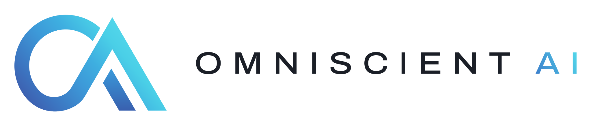

TickerNet · open-source job scheduler for .NET
Background jobs for .NET, open source for good
TickerNet runs one-off and recurring jobs inside your .NET app. A job is a plain method with a [TickerFunction] attribute. A source generator registers it at compile time. Jobs can be kept in memory, in your EF Core database, in Redis or in MongoDB, and a built-in dashboard shows them live. Job code can also run in separate worker processes that connect to the scheduler.
Use, change and redistribute TickerNet under MIT or Apache-2.0, whichever you choose. Fork it, build closed-source or commercial products on it, and keep your changes private. Nothing in TickerNet's governance adds conditions to that.
Every TickerNet release stays MIT OR Apache-2.0: no paid edition, no source-available version, no license keys and no CLA. Omniscient AI has made this an irrevocable pledge.

Omniscient AI set up the TickerNet fork, maintains it and funds its development. It holds the TickerNet name for the community under the pledge.
On this page
Start here
Pick the page that matches what you came to do.
What TickerNet does
Everything listed here is in the code on main today.
- Time jobs and cron jobs. A time ticker runs a function once at a set time. A cron ticker runs it on a six-field cron schedule (seconds first), evaluated in the scheduler's time zone.
- Jobs are methods. Mark a method with
[TickerFunction("Name")]. The source generator in the core package finds it at compile time and registers it from a module initializer, so there is no reflection scan at startup. You can also register jobs in code withMapTicker. - Retries, payloads and chains. Each job can carry a JSON request payload, a retry count and retry intervals in seconds (30 seconds when none are set). Time tickers can have child jobs that run when the parent succeeds, fails, is cancelled or finishes, or alongside it.
- Limits per function. Set a priority and a maximum number of concurrent runs per function.
LongRunningjobs get their own thread instead of the shared worker pool. - Your choice of store. Jobs live in memory unless you add a store: Entity Framework Core (with TickerNet's own
DbContextor yours), Redis, or MongoDB. - Several nodes. Each node locks the jobs it takes. With Redis added, nodes send heartbeats and the jobs of a node that stops are released for the others.
- Remote workers. With
TickerNet.Hubin the scheduler andTickerNet.Workerin another app, job code runs in that app. Workers connect to the scheduler over one gRPC stream and prove a shared secret; there is no hosted service. The scheduler keeps the jobs, retries, status and dashboard. See Remote workers. - Live dashboard.
TickerNet.Dashboardserves a web UI and HTTP API from your ASP.NET Core app, updated over SignalR, with basic, API key, host or custom sign-in. - Logs and traces. Job events always go to
ILogger. Turn on theTickerNetActivitySource to get OpenTelemetry spans. - Trimming and AOT. The core, Utilities, Redis and Dashboard packages are marked AOT-compatible, and request payloads can use a source-generated JSON context.
Why it exists
TickerNet is a fork of TickerQ by Arcenox LLC.
TickerQ was open source under MIT OR Apache-2.0 up to its 10.4.0 package and its main-branch commit 3acd0f31 (5 July 2026). On 19 October 2026 its main branch moved to a commercial, source-available license, and TickerQ 10.5.0 (25 October 2026) shipped under the TickerQ Software License Agreement v1.0. That agreement is free for organizations under US$5 million in annual revenue and paid above it. TickerNet continues from 3acd0f31 under the same dual license, with a pledge that it stays open source.
TickerNet is not affiliated with Arcenox LLC. The original authors keep their credit: the full TickerQ history up to the fork point is in the repository, and the Arcenox LLC copyright notices are kept. ADR 0001 records the fork point.
Packages
All packages share one version, set in src/Directory.Build.props. None are on NuGet yet; build them from source as Getting started shows.
| Package ID | Description (from the .csproj) | Packed |
|---|---|---|
TickerNet | A lightweight, developer-friendly library for queuing and executing cron and time-based jobs in the background. | Yes. Also carries the source generator. |
TickerNet.Utilities | Simple utilities for queuing and executing cron/time-based jobs in the background. | Yes. Every other package depends on it. |
TickerNet.EntityFrameworkCore | Entity Framework Core integration for scheduling and persisting cron/time-based jobs using TickerNet. | Yes |
TickerNet.Caching.StackExchangeRedis | Redis caching and distributed synchronization provider for TickerNet job scheduler using StackExchange.Redis | Yes |
TickerNet.MongoDB | MongoDB persistence provider for TickerNet. Uses the official MongoDB.Driver — no EF Core, no ODM. | Yes |
TickerNet.Dashboard | Dashboard UI for visualizing and monitoring TickerNet scheduled jobs. | Yes |
TickerNet.Hub | Lets a TickerNet scheduler run jobs on separate worker processes. Workers connect to the scheduler with TickerNet.Worker; no hosted service is involved. | Yes |
TickerNet.Worker | Runs TickerNet jobs in a separate worker process. The worker connects to a scheduler that uses TickerNet.Hub, declares its [TickerFunction] functions, and runs them when the scheduler sends them. | Yes |
TickerNet.Instrumentation.OpenTelemetry | OpenTelemetry instrumentation package for TickerNet job scheduler with distributed tracing support | Yes |
TickerNet.SourceGenerator | No package ID or description. The Roslyn source generator and analyzer for [TickerFunction] methods. | No. Its DLL is packed into TickerNet under analyzers/dotnet/cs. |
Quick start
A web app that keeps jobs in memory. It follows samples/TickerNet.Sample.WebApi without the database.
using TickerNet.DependencyInjection;
using TickerNet.Utilities.Base;
using TickerNet.Utilities.Entities;
using TickerNet.Utilities.Interfaces.Managers;
var builder = WebApplication.CreateBuilder(args);
builder.Services.AddTickerNet(); // in-memory store by default
var app = builder.Build();
app.UseTickerNet(); // starts the scheduler with the host
app.MapPost("/hello", async (ITimeTickerManager<TimeTickerEntity> manager) =>
{
var result = await manager.AddAsync(new TimeTickerEntity
{
Function = "HelloWorld",
ExecutionTime = DateTime.UtcNow.AddSeconds(5)
});
return result.IsSucceeded
? Results.Ok(new { result.Result.Id })
: Results.Problem(result.Exception?.Message);
});
app.Run();
public class HelloJobs
{
[TickerFunction("HelloWorld")]
public Task HelloAsync(TickerFunctionContext context, CancellationToken cancellationToken)
{
Console.WriteLine($"Hello from TickerNet. Id={context.Id}, ScheduledFor={context.ScheduledFor:O}");
return Task.CompletedTask;
}
}Post to /hello and the job runs about five seconds later. Getting started covers stores, cron jobs, options and the dashboard.
Sponsor
Omniscient AI (Omniscient AI Private Limited) set up the TickerNet fork, maintains it, and funds maintainer time and the project's running costs. As steward it holds the TickerNet name, GitHub organization, docs site and NuGet package IDs for the community, under the open-source pledge.